За черникой на озеро Ганг
( 1 сентября 2007 )
Черники этим летом много. Это все знают. Заходи с федеральной трассы в лес и вот она. Или в Выдрино за заборы зайди и собирай хоть целый день. Но мы же легких путей не ищем, нам черника с горных склонов слаще подзаборной мелочи. Да и компания собралось - сплошь матерые лосяры, которым тропу покруче подавай, да вёдра побольше, а то вдруг черника нападет - не отобъешься :) В общем, приехали на Мамай с утра пораньше, часиков эдак в 11, машинку на хуторе возле дома бабы Иры поставили и бегом, бегом, бегом... Блин, шлагбаум помешал, зацепились... Да еще мотоциклист в лице Димы Яскина прямо по тропе ездит туда-обратно, разговорами интересными отвлекает... :) Ну и зимний городок надо осмотреть, интересно, чего с ним за лето сделали черемошники и прочие бичеватые ягодники? А в общем-то ничего особенного, разве что с "вигвамов" на бурятской поляне шкуры содрали, а в "храме SATаны" утащили кастрюлю и коврики. И только "берлога" Малюка и Тугарина красовалась вниманием хозяев и новой крышей. А кунг как стоял, так и стоит себе, незыблимо и легендарно!
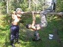 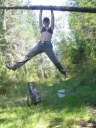 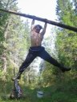 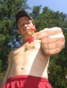 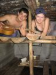 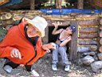
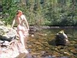 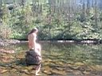 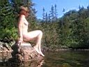 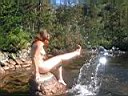 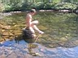
О, целебная и прохладная вода горного озера Ганг!
Ты так и манишь оставить все лишнее на берегу
и окунуться в зеркальную гладь,
чтобы заново родиться, с чистой душой и телом!
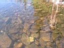 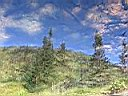 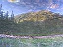 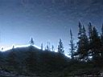
Зазеркалье!
А черники вокруг полным-полно, вкусная и крупная. Вкуснее ягоды в горах не бывает. Медведь не дурак, знает в чем сила, брат! Ну и мы немного силы себе попросим в ведерко, нам ведь главное не количество, а процесс! А еще в горах надо немного по-сайгачить - быстро залезть по курумнику на ближайшую гору, заценить видовки и позырки, накопать волшебных корешков и быстро-быстро поскакать вниз...
На перевале узрел нескольких человеков и по радостно бегающим собачкам рыжей масти узнал знакомых любителей отдыха на Хамар-Дабане. "Иркутск! Привет от Слюдянки!"
Эх, надо было тоже палатку взять, да с ночевой на свежем воздухе! Ну да ладно, не в последний же раз, впереди еще сборы горной брусники и горного ореха :) А нас сегодня в Новоснежной ждут родители с ремнём и баня с пихтовым веником, так что мы поспешим обратно...
P.S.: а про ремень я пошутил :)
Сентябрь 2007
Лёха Слюдянский
|